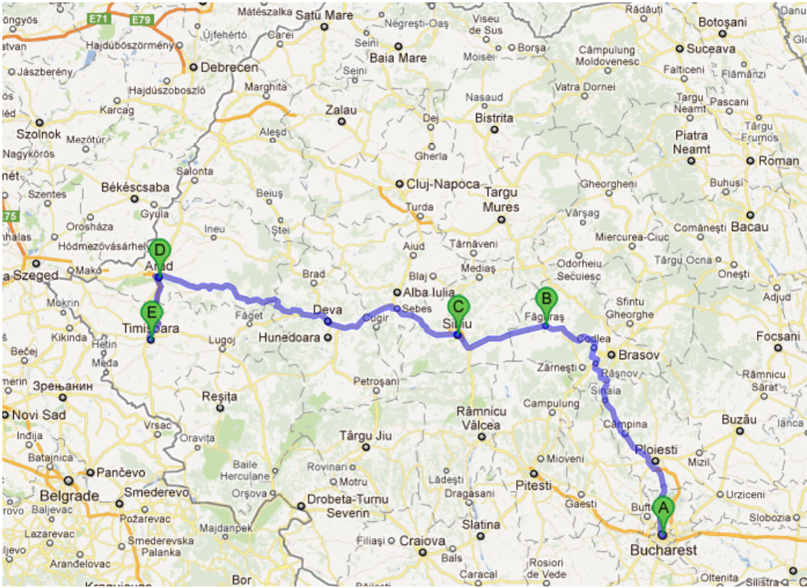

layout: true <div class="header"><img src="https://rosin-project.eu/wp-content/uploads/rosin_ack_logo_wide.png" style="background-color:transparent"/></div> <div class="footer"><img src="https://www.ipa.fraunhofer.de/content/dam/ipa/ipa.svg" /><p>© Fraunhofer IPA</p></div> <div class="triangle"></div> --- class: center, middle name: main_title # Navigation using ROS 2 ## Mapping  --- # SLAM - Simultaneous Localization And Mapping <img src="../static/Mapping.png" alt="Intro" style="width:500px" class="image-center"/> --- ## Mapping - SLAM * SLAM: Estimate the pose of a robot and the map of the environment at the same time * Localization: inferring location given a map * Mapping: inferring a map given location * SLAM: learning a map and locating the robot simultaneously * The goal of SLAM is to create or enhance an environment map. * Maps represent the environment, either 2D or 3D. * Is actually a tough problem to solve! --- ## Mapping - SLAM ### Types of maps .cols[ .fifty[ <img src="../static/grid_map.png" alt="grid_map" style="height:210px" class="image-left"/> ] .fifty[ <img src="../static/graph_map.jpg" alt="grid_map" style="height:210px" class="image-left"/> ] .fifty[ ] ] .cols[ .fifty[ Grid based ] .fifty[ Graph based ] .fifty[ Feature based ] ] [source](http://ais.informatik.uni-freiburg.de/teaching/ss12/robotics/slides/12-slam.pdf) --- ## Mapping - SLAM ### ROS 2 tools SLAM for ROS2 unfortunately does not have a golden standard yet. Some contenders are: * LaMa (2D) - IRIS Labs - New, arguably better, strong contender * Cartographer (2D/3D) - Google - Ported from ROS1, used often, but not maintained * SLAM Toolbox (2D) - Steve Macenski - Currently shipped with Navigation2, needs support. [Help if you can!](https://discourse.ros.org/t/slam-toolbox-the-new-default-slam-implementation-for-ros2/12369) LaMa vs SLAM Toolbox [https://www.youtube.com/watch?time_continue=48&v=Cgcl3LcFnEs&feature=emb_logo] --- ## Mapping - 2D SLAM * Occupancy grid maps * Prability is calculated for each grid cell (Bayes filter) --- ## Mapping - 2D SLAM - Video <video src="../static/2d_mapping.mp4" style="height:300px"></video> --- ## Mapping - 3D SLAM ### Octotrees for 3D Occupancy Maps * Tree-based data structure source: OctoMap : A Probabilistic , Flexible , and Compact 3 D Map Representation for Robotic Systems source: http://ros-developer.com/2017/11/27/octomap-explanierend/ --- ## Mapping - 3D SLAM - Video <video src="../static/3d_mapping.mp4" style="height:300px"></video> [Cartographer 3D SLAM example](https://github.com/inkyusa/cartographer_kitti_config) --- ## Navigation - Questions ?